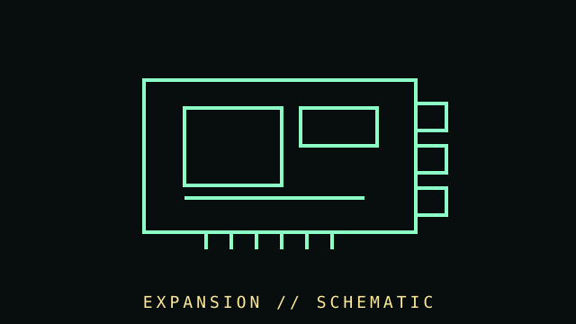

[ SUBCATEGORY DIRECTORY // 11 FILES // 73 PART RECORDS ]
Browse expansion cards subcategories
Each subcategory has a dedicated listing; open a file to browse individually cataloged components.
Legacy network interfaces and analog modem cards.
OPEN SUBCATEGORY FILE →SUBCATEGORY FILE // 16 PART RECORDSStorage and disk controllersSCSI/SAS/SATA host adapters and disk controllers, including ISA-era storage cards.
OPEN SUBCATEGORY FILE →SUBCATEGORY FILE // 3 PART RECORDSCapture and serial I/OExisting capture and serial-interface records retained in their original archive group.
OPEN SUBCATEGORY FILE →SUBCATEGORY FILE // 7 PART RECORDSAudio add-in cardsSound and professional audio add-in cards.
OPEN SUBCATEGORY FILE →SUBCATEGORY FILE // 9 PART RECORDSSerial-port cardsRS-232 expansion cards with model-specific port and driver notes.
OPEN SUBCATEGORY FILE →SUBCATEGORY FILE // 10 PART RECORDSUSB and FireWire controllersUSB and IEEE 1394 host controllers with power and cabling caveats.
OPEN SUBCATEGORY FILE →SUBCATEGORY FILE // 9 PART RECORDSCapture and playback cardsProfessional multi-channel SDI capture/playback cards.
OPEN SUBCATEGORY FILE →SUBCATEGORY FILE // 6 PART RECORDSCompute acceleratorsPCIe coprocessors and FPGA accelerator cards.
OPEN SUBCATEGORY FILE →SUBCATEGORY FILE // 4 PART RECORDSSecurity coprocessorsPlatform-specific hardware cryptographic modules.
OPEN SUBCATEGORY FILE →SUBCATEGORY FILE // 1 PART RECORDSData-acquisition cardsMeasurement and control cards with exact I/O and driver records.
OPEN SUBCATEGORY FILE →SUBCATEGORY FILE // 6 PART RECORDSIndustrial and measurement cardsData-acquisition, instrument-bus and industrial-control cards.
OPEN SUBCATEGORY FILE →[ COMPONENT RECORD // EXPANSION BUS ]
Expansion
cards.
Add-in cards extend a computer with graphics, storage, capture, serial/parallel ports, accelerators, and specialized I/O. Their slot shape, electrical lane wiring, bracket, firmware, and driver support all matter.

CLASS RECORD: PCI Express and historical ISA/PCI cards. A connector's physical length does not establish its electrical lane count or device compatibility.
Reference specifications
| Bus generations | Modern PCs use PCI Express. Earlier systems used PCI, AGP, ISA, MCA, VLB, and proprietary buses; these generations are not directly interchangeable. |
|---|---|
| Lane widths | PCIe devices negotiate lane width (x1, x4, x8, x16, etc.) and generation based on device, slot wiring, firmware, and platform topology. |
| Physical details | Full-height/low-profile brackets, single/double/triple slot thickness, auxiliary power, card length, and airflow requirements vary by card. |
| Software | Firmware, operating-system drivers, DMA behavior, and application support can be as important as slot compatibility. |
Installation & catalog fields
- Record bus type, PCI IDs, subsystem vendor/device IDs, firmware, bracket type, lane width, required power, and OS support.
- Read the motherboard manual for slot wiring, lane sharing, bifurcation, and resource limitations.
- Use the proper slot cover and secure the bracket; prevent card sag, short circuits, and obstructed fans.
- Legacy cards may require option ROM support, a particular BIOS mode, or drivers for an obsolete operating system.
- Include riser cards, backplanes, M.2 adapters, storage HBAs, capture cards, serial cards, and accelerator modules in a broader index.
Sources & further reading
- PCI-SIG — PCI Express specificationsPrimary standards and compliance resources.
- Intel — PCI Express overviewGeneral interface and slot guidance.
- Linux kernel — PCI support documentationTechnical reference for device enumeration and platform behavior.